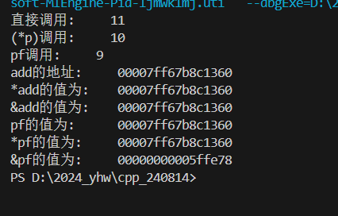
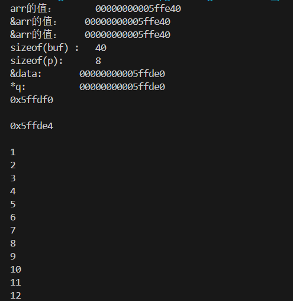
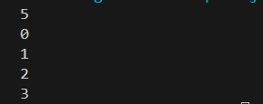
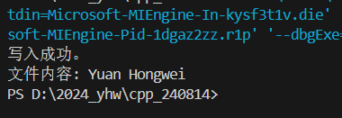
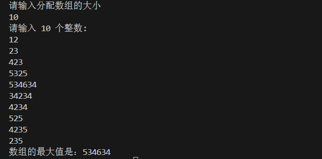
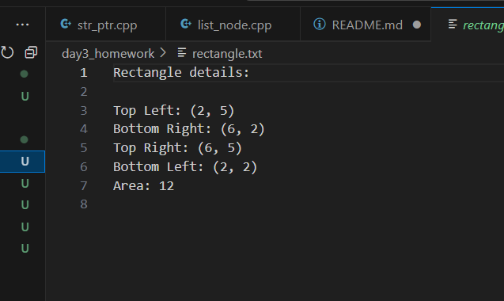

Day1
Day3任务
1.指针：
-
test1:编写函数指针，理解函数指针：
代码只是简单的赋值输出没啥好说的
结果：  -
test2:数组指针: 
-
test3:理解((void()())0)()； 首先：最后的()是想将前面的引用成函数
- void(*)()是定义一个函数指针，返回值为void
- '0'常数0
- (void()())0 就是将0转换成void()()类型的函数指针
-
最后通过*解引用后调用地址为0的函数
-
test4:实现简单的数组链表: 首先用结构体定义一个node：
struct ListNode {
int val;
ListNode* next;
ListNode(int x) : val(x), next(nullptr) {}//使用构造函数来初始化node
};
用遍历链表的方式写入和读取链表中的值：
void plot_node(ListNode* head)
{
ListNode * current = head;
while(current != nullptr)
{
std::cout<<current->val<<std::endl;
current = current->next;
}
}
int main()
{
//构造链表
ListNode* head = new ListNode(5);
ListNode* p = head;
//循环写入0到3
for (int i = 0;i<4;i++)
{
p->next = new ListNode(i);
p = p->next;
}
plot_node(head);
return 0;
}
结果：

2.文件：
首先定义一个变量保存文件路径和名字：
const std::string filename = "yhw.txt";
const std::string myName = "Yuan Hongwei";
便于修改后续的文件和内容的修改
后通过outfile和infile方法将内容写入文件和读取文件
std::ofstream outFile(filename);
if (outFile.is_open()) {
outFile << myName;
outFile.close();
std::cout << "写入成功。" << std::endl;
}
else {
std::cerr << "操作失败。" << std::endl;
return 1;
}
// 打开文件并读取内容
std::ifstream inFile(filename);
if (inFile.is_open()) {
std::string fileContent;
std::getline(inFile, fileContent);
inFile.close();
// 打印文件内容
std::cout << "文件内容: " << fileContent << std::endl;
}
else {
std::cerr << "无法打开文件进行读取。" << std::endl;
return 1;
}
结果：

3.课后作业：
1.定义动态区域比较大小
- 定义动态区域：
//分配地址给Darr
int* Darr = new int[size];
将大小为size的一块区域分配给Darr
* 传入数据给Darr
//输入值给内存
std::cout << "请输入 " << size << " 个整数:" << std::endl;
for (int i = 0; i < size; ++i) {
std::cin >> Darr[i];
}
-
定义比较大小的函数：
就是一个遍历数组的过程 -
释放空间：
delete Darr;
结果： 
2.将矩形类的信息打印进文件
类中新增
void RectangleDisplay()函数和filename变量
改变：
Rectangle(const Point& tl, const Point& br,std::string filename) : topLeft(tl), bottomRight(br), filename(filename) {
validatePoints();
}
在构造函数中将filename文件路径也初始化
后续调用rectangle类实例的话也需要传入filename
RectangleDisplay：
std::ofstream outFile(filename);
if (outFile.is_open()) {
outFile << "Rectangle details:\n";
outFile << "\nTop Left: (" << topLeft.getX() << ", " << topLeft.getY() << ")";
outFile << "\nBottom Right: (" << bottomRight.getX() << ", " << bottomRight.getY() << ")";
outFile << "\nTop Right: (" << bottomRight.getX() << ", " << topLeft.getY() << ")";
outFile << "\nBottom Left: (" << topLeft.getX() << ", " << bottomRight.getY() << ")";
double width = std::abs(bottomRight.getX() - topLeft.getX());
double height = std::abs(bottomRight.getY() - topLeft.getY());
double area = width * height;
outFile << "\nArea: " << area << std::endl;
outFile.close();
std::cout << "写入成功。" << std::endl;
}
else {
std::cerr << "操作失败。" << std::endl;
}
结果： 